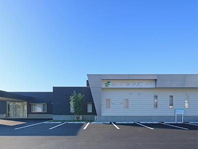

宮崎市の腎臓内科・人工透析内科
ふくどめクリニックは、患者様
の生活の質向上を目指します
お知らせ・ご連絡
診療案内
腎臓内科
【診療内容】
蛋白尿、腎機能低下などの慢性腎臓病、その他腎臓病の評価・管理
人工透析内科
【診療内容】
血液透析（HD）・血液透析濾過（オンラインHDFや間歇補充型HDF）
【腎臓内科】
| 月 | 火 | 水 | 木 | 金 | 土 | 日 | 祝 | |
|---|---|---|---|---|---|---|---|---|
| 午前 | ● | ● | ● | ● | ● | ● | - | - |
| 午後 | ● | - | ● | - | ● | - | - | - |
午後:14:00～17:00
※受付は診療時間終了30分前までとなります。
【人工透析内科】
| 月 | 火 | 水 | 木 | 金 | 土 | 日 | 祝 | |
|---|---|---|---|---|---|---|---|---|
| 午前 | ● | ● | ● | ● | ● | ● | - | ● |
| 午後 | ● | - | ● | - | ● | - | - | ● |
午後:15:00～21:00
受診される方へ
初診の方
●受診当日は、お手持ちの保険証をご持参の上、受付時間内にご来院ください。
●紹介状をお持ちの方は、忘れずにご持参ください。
●慢性腎臓病の方は、過去の採血・検尿データをご持参していただけると病状把握のためにとても役立ちます。
再診の方●受診の際は、その都度保険証の提示をお願いしております。
●氏名・住所など、保険証の内容に変更があった場合には、必ず受付にお申し出ください。
ご持参いただくもの
- 健康保険証
- マイナンバーカード（お持ちの方）
- 各種公費医療受給者証（お持ちの方）
- お薬手帳（かかりつけ病院のある方）
アクセス
| 名称 | 医療法人 慶仁会 ふくどめクリニック |
|---|---|
| 所在地 | 〒880-0924 宮崎県宮崎市大字郡司分甲1600番地1 |
| 電話 | 0985-41-7700 0985-41-7701（FAX） |
| 診療科目 | 腎臓内科・人工透析内科 |

お車でお越しの方
駐車場を20台ほど用意しています。